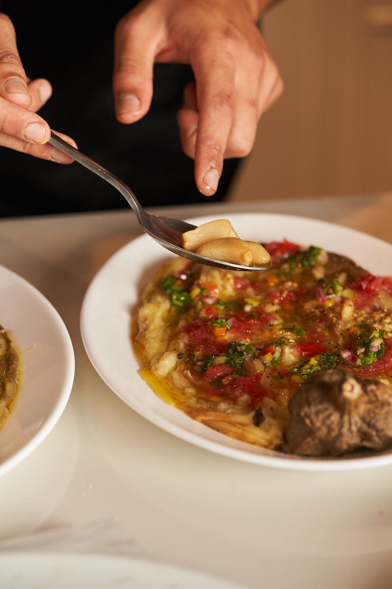

איך בונים תפריט לארוחת שף: מהביס הראשון ועד הקינוח

תפריט טוב לארוחת שף הוא לא רשימה של המנות הכי טובות שהשף יודע להכין. הוא סיפור של ערב שלם: איך מתחילים, מתי מגיע השיא, ואיך יוצאים מהשולחן מרוצים בלי להרגיש כבדים. הנה המבנה, ומה הופך אותו לעובד.
תפריט של ארוחת שף בנוי בדרך כלל מביסים קטנים לפתיחה, כמה מנות ראשונות, מנה עיקרית וקינוח. הסוד הוא איזון: הולכים מהקל אל העשיר, מגוונים במרקמים ובטמפרטורות, ומשאירים מקום לשיחה. מנות משותפות מתאימות לערב משוחרר ולשולחן גדול, והגשה אישית לערב חגיגי.
מה המבנה הקלאסי של ארוחת שף?
- ביסים לפתיחה - קטנים, טריים, כאלה שאפשר לאכול עם כוס ביד, בזמן שהאורחים מגיעים.
- מנות ראשונות - כמה מנות קלות יחסית, לרוב טריות או נאות: דג, ירקות, לחם חם.
- מנה עיקרית - השיא של הערב, בדרך כלל המנה העשירה ביותר.
- קינוח - סוגר את הערב, ולא צריך להיות כבד כדי להיזכר.
זה שלד, לא חוק. יש ערבים שמתאים להם שולחן מלא במנות משותפות מההתחלה ועד הסוף, ויש ערבים שמתאים להם קצב של מסעדה, מנה אחרי מנה.
איך מאזנים בין המנות?
הכלל הפשוט הוא ללכת מהקל אל העשיר. מנות נאות וחמוצות פותחות את התיאבון, ומנות צלויות ועשירות באות אחריהן. כדאי גם לגוון במרקמים ובטמפרטורות: מנה קרה וטרייה ליד מנה חמה, משהו פריך ליד משהו רך. וכשיש באותו ערב דג ובשר, הדג מגיע לרוב קודם.
מנות משותפות או הגשה אישית?
| מנות משותפות | הגשה אישית | |
|---|---|---|
| האווירה | משוחררת, כמו ארוחה משפחתית | חגיגית, כמו מסעדה |
| הקצב | הרבה מנות על השולחן בבת אחת | מנה אחרי מנה |
| מתאים במיוחד ל | חברים, משפחה, שולחן גדול | ערב מיוחד, שולחן קטן יותר |
אפשר גם לשלב: ביסים ומנות ראשונות לשיתוף, ומנה עיקרית אישית. ככל שהשולחן גדל, השילוב הזה הופך לנוח יותר (על אירועים של 15 עד 30 איש).
כמה מנות זה מספיק?
מספיק כדי שאף אחד לא יקום רעב, ולא כל כך הרבה שהקינוח מרגיש כמו משימה. את המספר המדויק קובעים לפי סוג הערב, לפי הגשה אישית או משותפת, ולפי האורחים עצמם. זה בדיוק מה שמדברים עליו בשיחה הראשונה עם השף, ואפשר לשנות אחרי שמקבלים את הצעת התפריט.
איך זה נראה בערבים של ליאב?
בגלריה מהערבים של ליאב רואים את המבנה הזה בפועל: טרטר טונה על אבוקדו, קרפצ׳יו עם שום קונפי, חציל שרוף עם טחינה ולחמים שיוצאים חמים לשולחן, ואחריהם סטייק מהגריל שנפרס ומוגש על קרש. בכל ערב התפריט נבנה מחדש סביב האורחים, ולכן אף ערב לא נראה בדיוק כמו הקודם.
שאלות נפוצות
אפשר לבחור את המנות בעצמנו?
התפריט נבנה יחד. אחרי השיחה הראשונה מקבלים הצעת תפריט, ומשנים אותה עד שהיא מרגישה נכון לכם ולאורחים.
מה מגישים בפתיחה, לפני שמתיישבים?
ביסים קטנים וטריים שאפשר לאכול עם כוס ביד, בזמן שהאורחים מגיעים. הם פותחים את התיאבון בלי להכביד לפני הארוחה.